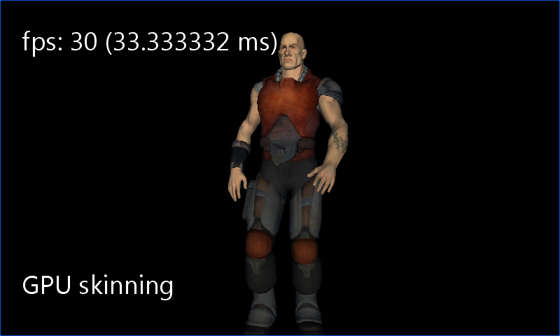

CPU Skinning
Ported from Microsoft's XNA 4.0 CPU Skinning Demo.
Source for this sample on GitHub ↗

Play ▸Opens in a new tab.
About this sample
The same animated character is processed into two model assets. The GPU path uses a SkinnedEffect; the CPU path blends four bone transforms per vertex, uploads the resulting vertices each frame and draws them with BasicEffect. The sample displays the active mode and frame rate.
Controls
| Action | Control |
|---|---|
| Switch CPU and GPU skinning | Right click or tap |
| Rotate the camera | Left mouse button and drag, or touch drag |